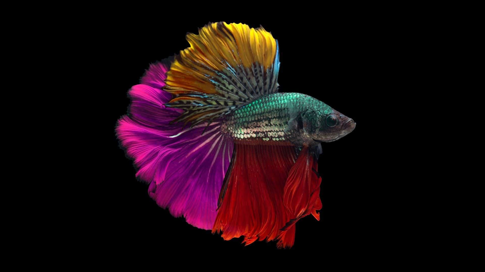
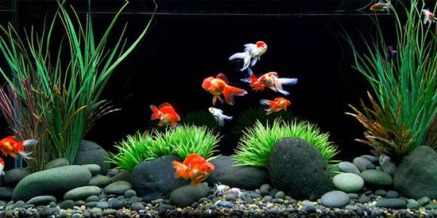
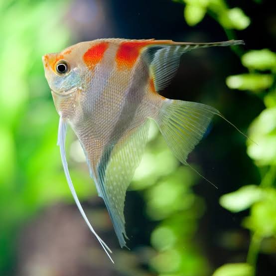
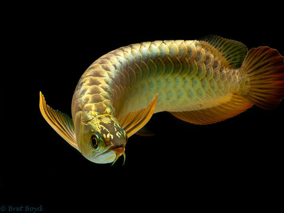
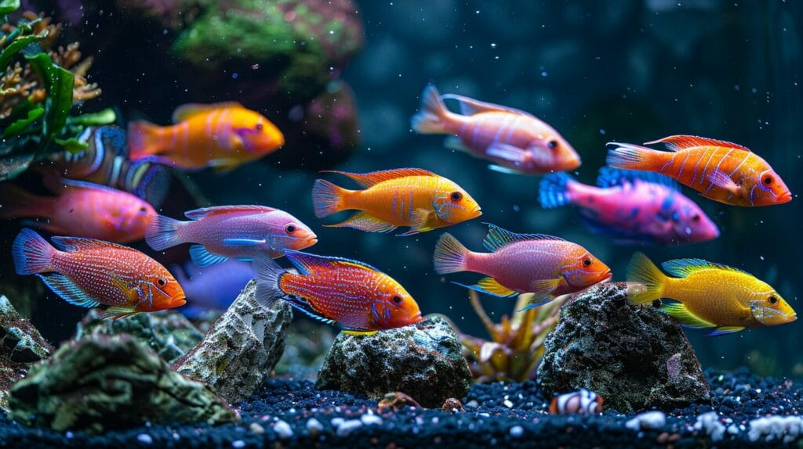
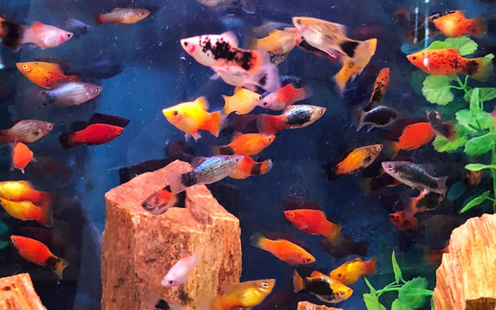
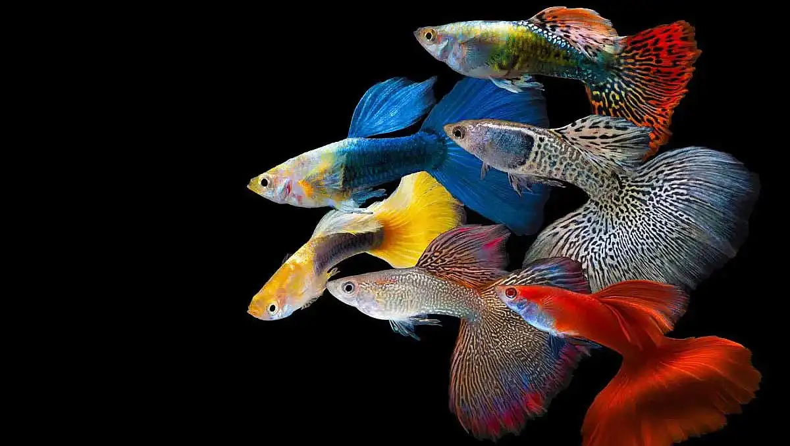
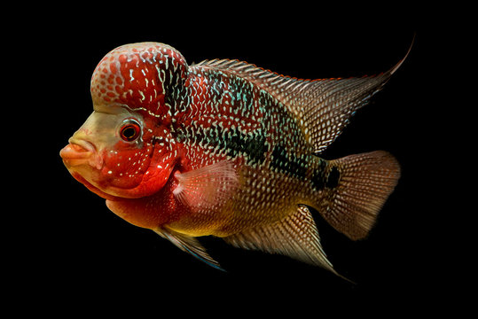

The Majestic Betta Fish
Summary: Discover the vibrant colors and unique behaviors of the Betta fish.
Species Overview:
Betta fish (Betta splendens), also known as Siamese fighting fish, are popular
freshwater fish celebrated for their vivid colors and elegant, flowing fins. Native to Southeast Asia,
they thrive in warm, shallow waters such as rice paddies and slow-moving streams. Betta fish
are known for their aggressive behavior, especially males, who are highly territorial and build bubble nests
for breeding. They require a well-maintained tank with gentle filtration and a diet rich in high-quality Betta pellets,
supplemented with live or frozen food. Betta fish typically live 2-4 years, making them a captivating
and manageable choice for aquarists of all levels.

Betta Fish Care Guide
Habitat
Betta fish are native to the warm, shallow waters of Southeast Asia. They are often found in rice paddies, slow-moving streams, and ponds. To replicate their natural habitat, a tank with calm water and plenty of hiding spots is ideal.
To replicate their natural habitat in an aquarium:
Tank Setup and Maintenance
- Tank Size: A minimum of 5 gallons is recommended.
- Water Temperature: Maintain a temperature between 76-82°F.
- Filtration: Use a gentle filter to avoid strong currents.
- Water Changes: Perform regular water changes, replacing 25-30% of the water weekly.
Food
Betta fish thrive on a diet of high-quality Betta pellets. To provide a balanced diet, supplement their pellets with live or frozen food such as brine shrimp, daphnia, and bloodworms.
Water Quality
- pH Levels: Keep the pH between 6.5 and 7.5.
- Ammonia and Nitrite: Ensure levels are at 0 ppm.
- Nitrate: Keep nitrate levels below 20 ppm.
Tank Mates
Betta fish are known for their aggressive behavior, especially males. Suitable tank mates include:
- Snails: Mystery snails or nerite snails.
- Shrimp: Ghost shrimp or cherry shrimp.
- Small Fish: Species like neon tetras or corydoras catfish, but always monitor interactions closely.
Life Span
With proper care, Betta fish typically live 2-4 years. Providing a clean environment, a balanced diet, and avoiding stress can help ensure a longer, healthier life for your Betta.
Back to Top
Creating a Perfect Home for Goldfish
Summary: Learn the essentials of setting up a goldfish tank that promotes health and longevity.
Species Overview:
Goldfish (Carassius auratus) are hardy, colorful freshwater fish originating from East Asia,
commonly kept as pets due to their adaptability and ease of care. Known for their vibrant hues and diverse varieties,
including common, comet, and fancy goldfish, they can live 10-15 years or longer with proper care.
Goldfish require a spacious tank or pond to thrive, as they produce considerable waste.
A minimum of 20 gallons per goldfish is recommended to maintain water quality.
Their tank should be equipped with a good filtration system and regular water changes to
keep ammonia and nitrate levels low. Goldfish thrive on a varied diet of flakes, pellets,
and occasional treats like peas and bloodworms. Avoid overfeeding to prevent digestive issues
and maintain a clean environment. With adequate space, clean water, and a balanced diet,
goldfish can grow, flourish, and display their best colors.

Goldfish Care Guide
Habitat
Goldfish (Carassius auratus) are freshwater fish originating from East Asia. They are known for their adaptability and vibrant colors, including varieties such as common, comet, and fancy goldfish. To thrive, goldfish require a spacious environment. A minimum of 20 gallons per goldfish is recommended to ensure ample space and maintain water quality. They can be kept in tanks or ponds, but larger tanks are preferable due to their high waste production.
To replicate their natural habitat in an aquarium:
Tank Setup and Maintenance
- Tank Size: Minimum of 20 gallons per goldfish.
- Water Parameters: Goldfish prefer cooler water, typically between 65-75°F (18-24°C), with a pH range of 7.0-8.4.
- Filtration: A robust filtration system is essential to keep the water clean and free of harmful ammonia and nitrates.
- Water Changes: Regular water changes (about 25% weekly) help maintain water quality.
Diet
Goldfish are omnivores and thrive on a varied diet:
- Staple Diet: High-quality goldfish flakes or pellets.
- Supplementary Foods: Vegetables (like peas and spinach), bloodworms, brine shrimp, and daphnia.
- Feeding Frequency: Feed small amounts 2-3 times daily, ensuring they consume the food within 2 minutes to prevent overfeeding and water pollution.
Tank Mates
Goldfish can coexist with other cold-water fish that are similar in size and temperament. Suitable tank mates include:
- Other goldfish varieties
- White Cloud Mountain Minnows
- Weather Loaches. Avoid aggressive or fin-nipping fish and tropical species that require warmer water.
Life Span
With proper care, goldfish can live 10-15 years or longer. Ensuring they have adequate space, clean water, and a balanced diet is crucial for their health and longevity.
Back to Top
The Graceful Angelfish
Summary: Explore the elegance and beauty of angelfish in your aquarium.
Species Overview:
The Graceful Angelfish (*Centropyge venusta*) is a striking marine fish with a bright blue body and yellow head and tail,
accentuated by a blue or purple line. Native to the Western Pacific, it thrives in coral-rich areas and rocky reefs.
Growing up to 4 inches, it needs a spacious tank with hiding spots and live rock for grazing.
This species is semi-aggressive but can coexist with other non-aggressive fish in a well-planned community tank.
Its diet should include high-quality marine flake or pellet food, supplemented with algae and frozen food for optimal health.
Regular water changes and stable water conditions are crucial for maintaining its vibrant coloration and overall well-being.
With proper care, the Graceful Angelfish can be a captivating addition to a marine aquarium,
admired for its vivid colors and active swimming behavior.

Angefish Care Guide
Habitat
In the wild, Graceful Angelfish (*Centropyge venusta*) thrive in coral-rich areas and rocky reefs.
To replicate their natural habitat in an aquarium:
Tank Setup and Maintenance
- Tank Size: A minimum of 30 gallons is recommended.
- Aquascaping: Include plenty of live rock to provide hiding spots and grazing surfaces.
- Water Parameters: Maintain stable water conditions with a temperature of 72-78°F (22-26°C), pH between 8.1-8.4, and specific gravity of 1.020-1.025.
- Filtration: A high-quality filtration system is essential to keep water clean and maintain stable conditions.
- Water Changes: Regular water changes (about 10-15% weekly) are crucial to maintain water quality and stability.
- Lighting: Moderate to high lighting helps promote the growth of algae, which the angelfish will graze on.
Diet
Graceful Angelfish are omnivores and require a varied diet to maintain their health and vibrant coloration:
- Staple Diet: High-quality marine flake or pellet food.
- Supplementary Foods: Algae (such as nori), spirulina, and frozen foods like brine shrimp and mysis shrimp.
- Feeding Frequency: Feed small amounts 2-3 times daily.
Behavior and Tank Mates:
- Temperament: Semi-aggressive; can coexist with other non-aggressive fish in a well-planned community tank.
- Suitable Tank Mates: Other peaceful marine fish, such as gobies, blennies, and non-aggressive wrasses. Avoid keeping with overly aggressive or territorial species.
Life Span
With proper care, the Graceful Angelfish can live up to 5-7 years. Ensuring a stable environment, varied diet, and proper tank mates will contribute to their health and longevity.
Back to Top
The Magnificent Golden Arowana
Summary: Unveil the splendor of the Golden Arowana and its unique care requirements.
Species Overview:
The Magnificent Golden Arowana (*Scleropages formosus*), renowned for its dazzling golden scales and majestic presence,
is a highly sought-after freshwater fish native to Southeast Asia. Growing up to 35 inches, it requires a large,
well-maintained tank with ample swimming space and strong filtration to accommodate its size and bioload.
As a carnivorous predator, its diet should consist of high-quality pellets, live or frozen fish, shrimp, and insects.
Regular water changes and stable water conditions are vital for its health and vibrant coloration.
This species is best kept singly or with other large, non-aggressive tank mates to prevent territorial disputes.
Due to its cultural significance and striking appearance, the Golden Arowana is often considered a symbol of wealth
and prosperity in many Asian cultures. With dedicated care, it can be a stunning and rewarding addition to a large,
carefully planned aquarium, captivating observers with its graceful movements and radiant golden sheen.

Golden Arowana Care Guide
Habitat
In the wild, Golden Arowanas inhabit slow-moving rivers and blackwater swamps.
To replicate their natural habitat in an aquarium:
Tank Setup and Maintenance
- Tank Size: A minimum of 250 gallons is recommended due to their potential size of up to 35 inches.
- Aquascaping: Provide a large, open swimming space with minimal decorations. Include sturdy, smooth rocks and driftwood for hiding spots.
- Water Parameters: Maintain stable water conditions with a temperature of 75-82°F (24-28°C), pH between 6.0-7.0, and soft to moderately hard water.
- Filtration: A strong filtration system is essential to handle the high bioload and maintain water quality.
- Water Changes: Perform regular water changes (20-30% weekly) to keep the water clean and stable.
- Lighting: Moderate lighting is preferred to enhance the golden coloration and mimic their natural environment.
Diet
Golden Arowanas are carnivorous predators and require a high-protein diet:
- Staple Diet: High-quality carnivorous pellets.
- Supplementary Foods: Live or frozen fish, shrimp, insects, and occasional pieces of meat.
- Feeding Frequency: Feed 1-2 times daily, ensuring not to overfeed to maintain water quality.
Behavior and Tank Mates:
- Temperament: Territorial and best kept singly or with other large, non-aggressive tank mates.
- Suitable Tank Mates: Other large, peaceful fish such as stingrays, large catfish, and bichirs. Avoid keeping with smaller fish that could be seen as prey or overly aggressive species.
Life Span
With proper care, the Golden Arowana can live up to 15-20 years. Ensuring a stable environment, varied diet, and suitable tank mates will contribute to their health and longevity.
Back to Top
Colorful and Active Cichlids
Summary: Dive into the world of Cichlids and discover their vibrant personalities.
Species Overview:
Cichlids are a diverse group of freshwater fish known for their vibrant colors and active behavior. Originating from
Africa, Central and South America, they come in a wide variety of shapes and sizes, making them popular among aquarium
enthusiasts. These fish are often territorial and require a well-structured tank with plenty of hiding spots and open
swimming areas. Cichlids thrive on a diet of high-quality flakes, pellets, and occasional live or frozen food. Regular
water changes and stable water conditions are essential for their health and coloration. With their dynamic personalities
and stunning appearances, Cichlids can bring a lively and colorful addition to a well-maintained aquarium.

Cichlids Care Guide
Habitat
In the wild, Cichlids inhabit lakes, rivers, and streams with varying water parameters.
To replicate their natural habitat in an aquarium:
Tank Setup and Maintenance
- Tank Size: Depending on the species, tank size can range from 30 gallons for smaller species to over 100 gallons for larger ones.
- Aquascaping: Provide a mix of hiding spots using rocks, caves, and plants, along with open swimming areas.
- Water Parameters: Maintain stable water conditions with a temperature of 74-82°F (23-28°C), pH between 6.5-8.5, and soft to moderately hard water.
- Filtration: Use a robust filtration system to manage the bioload and maintain water quality.
- Water Changes: Perform regular water changes (20-30% weekly) to keep the water clean and stable.
- Lighting: Moderate lighting is suitable for most Cichlid species, enhancing their natural coloration.
Diet
Cichlids are omnivorous and require a balanced diet:
- Staple Diet: High-quality flakes or pellets.
- Supplementary Foods: Occasional live or frozen foods such as brine shrimp, bloodworms, and insect larvae.
- Feeding Frequency: Feed 1-2 times daily, ensuring not to overfeed to maintain water quality.
Behavior and Tank Mates:
- Temperament: Many Cichlid species are territorial and can be aggressive, especially during breeding.
- Suitable Tank Mates: Other robust fish that can tolerate their behavior, such as other Cichlids, larger tetras, or catfish. Avoid keeping with very small or overly aggressive species.
Life Span
With proper care, Cichlids can live up to 5-10 years, depending on the species. Ensuring a stable environment, varied diet, and suitable tank mates will contribute to their health and longevity.
Back to Top
The Friendly Molly Fish
Summary: Get to know the playful and easygoing Molly Fish.
Species Overview:
The Friendly Molly Fish (*Poecilia sphenops*) is a popular freshwater species known for its adaptability,
peaceful nature, and ease of care. Native to the brackish and freshwater environments of Central America,
Mollies come in a variety of colors and fin shapes, making them a versatile choice for community tanks.
They thrive in well-planted aquariums with stable water parameters and a diet of high-quality flakes,
pellets, and occasional vegetables. Mollies are livebearers, meaning they give birth to free-swimming
fry, making them a fascinating species for breeding enthusiasts. Regular water changes and maintaining
good water quality are essential for their health. With their friendly demeanor and attractive appearance,
Mollies can add a lively and charming presence to any community aquarium.

Molly Fish Care Guide
Habitat
In their natural habitat, Mollies inhabit brackish and freshwater environments with abundant vegetation.
To replicate their natural habitat in an aquarium:
Tank Setup and Maintenance
- Tank Size: A minimum of 20 gallons is recommended for a small group of Mollies.
- Aquascaping: Provide a well-planted tank with plenty of hiding spots using live plants, rocks, and driftwood.
- Water Parameters: Maintain stable water conditions with a temperature of 72-82°F (22-28°C), pH between 7.5-8.5, and moderate hardness.
- Filtration: Use a good filtration system to keep the water clean and oxygenated.
- Water Changes: Perform regular water changes (20-30% weekly) to ensure optimal water quality.
- Lighting: Moderate lighting to support plant growth and enhance the fish’s colors.
Diet
Mollies are omnivorous and benefit from a varied diet:
- Staple Diet: High-quality flakes or pellets.
- Supplementary Foods: Include vegetables such as zucchini, spinach, and peas, as well as occasional live or frozen foods like brine shrimp and bloodworms.
- Feeding Frequency: Feed 1-2 times daily, ensuring not to overfeed.
Behavior and Tank Mates:
- Temperament: Mollies are generally peaceful and get along well with other non-aggressive fish.
- Suitable Tank Mates: Other peaceful species such as tetras, guppies, platies, and non-aggressive bottom dwellers like Corydoras catfish. Avoid aggressive or fin-nipping species.
Breeding:
- Livebearers: Mollies give birth to free-swimming fry, making them a fascinating species for breeding enthusiasts.
- Breeding Setup: Provide plenty of hiding spots for fry using plants and breeding boxes to protect them from adult fish.
Life Span
With proper care, Mollies can live up to 3-5 years. Ensuring a stable environment, varied diet, and suitable tank mates will contribute to their health and longevity.
Back to Top
The Vibrant Guppy Fish
Summary: Meet the colorful and lively Guppy Fish, a favorite among hobbyists.
Species Overview:
The Vibrant Guppy Fish (*Poecilia reticulata*), renowned for its brilliant colors and active nature,
is a beloved choice for both beginner and experienced aquarists. Native to the freshwater streams and
ponds of South America, Guppies are hardy and adaptable, thriving in a variety of water conditions.
They are livebearers, giving birth to fully-formed fry, making them fascinating to breed and observe.
Guppies require a well-maintained tank with stable water parameters, a varied diet of high-quality flakes,
pellets, and occasional live or frozen food. Regular water changes and proper filtration are crucial for
their health and vibrant coloration. With their friendly temperament and striking appearance, Guppies can
bring a lively and colorful addition to any community aquarium, captivating observers with their energetic
swimming and dazzling hues.

Guppy Fish Care Guide
Habitat
Guppies naturally inhabit freshwater streams and ponds.
To replicate their natural habitat in an aquarium:
Tank Setup and Maintenance
- Tank Size: A minimum of 10 gallons is recommended for a small group of Guppies.
- Aquascaping: Provide a well-planted tank with live plants, rocks, and hiding spots.
- Water Parameters: Maintain stable water conditions with a temperature of 72-82°F (22-28°C), pH between 6.8-7.8, and moderate hardness.
- Filtration: Use an efficient filtration system to keep the water clean and well-oxygenated.
- Water Changes: Perform regular water changes (20-30% weekly) to ensure optimal water quality.
- Lighting: Moderate lighting to support plant growth and enhance the fish’s colors.
Diet
Guppies are omnivorous and thrive on a varied diet:
- Staple Diet: High-quality flakes or pellets.
- Supplementary Foods: Include occasional live or frozen foods like brine shrimp, daphnia, and bloodworms.
- Vegetables: Small amounts of blanched vegetables such as spinach or zucchini.
- Feeding Frequency: Feed 1-2 times daily, ensuring not to overfeed.
Behavior and Tank Mates:
- Temperament: Guppies are generally peaceful and social, getting along well with other non-aggressive fish.
- Suitable Tank Mates: Other peaceful species such as tetras, mollies, platies, and non-aggressive bottom dwellers like Corydoras catfish. Avoid larger or aggressive species that might harass or eat them.
Breeding:
- Livebearers: Guppies give birth to fully-formed, free-swimming fry, making them fascinating to breed and observe.
- Breeding Setup: Provide plenty of hiding spots for fry using plants and breeding boxes to protect them from adult fish.
Life Span
With proper care, Guppies can live up to 2-3 years. Ensuring a stable environment, varied diet, and suitable tank mates will contribute to their health and longevity.
Back to Top
The Striking Flowerhorn Fish
Summary: Discover the unique and captivating Flowerhorn Fish, known for its vivid colors and distinctive head shape.
Species Overview:
The Flowerhorn Fish (Cichlasoma spp.), a man-made hybrid, is admired for its bright colors and prominent nuchal hump.
Originating from Southeast Asia, Flowerhorns are popular among aquarists for their striking appearance and engaging
personality. They require a spacious tank, powerful filtration, and a varied diet of high-quality pellets,
live or frozen foods, and occasional vegetables. Regular water changes and proper tank setup are crucial for
their health. With their territorial nature, Flowerhorns are best kept singly or with robust tank mates.
With dedicated care, they can live up to 10-12 years, adding a vibrant and dynamic presence to any aquarium.

Flower Horn Care Guide
Flowerhorns require a spacious and well-maintained tank:
Tank Setup and Maintenance
- Tank Size: A minimum of 75 gallons is recommended for a single adult Flowerhorn.
- Aquascaping: Decorate with sturdy rocks and large caves, avoiding delicate plants as Flowerhorns may uproot them.
- Water Parameters: Maintain a temperature of 78-84°F (25-29°C), pH between 6.5-7.8, and moderate hardness.
- Filtration: Use a powerful filtration system to manage their bioload.
- Water Changes: Perform regular water changes (25-30% weekly) to ensure optimal water quality.
- Lighting: Moderate to bright lighting to enhance their vibrant colors.
Diet
Flowerhorns are omnivorous with a preference for protein-rich foods:
- Staple Diet: High-quality pellets designed for cichlids.
- Supplementary Foods: Include live or frozen foods such as shrimp, worms, and small fish.
- Vegetables: Occasionally offer blanched vegetables like peas or spinach.
- Feeding Frequency: Feed 1-2 times daily, avoiding overfeeding to prevent health issues.
Behavior and Tank Mates:
- Temperament: Flowerhorns are territorial and can be aggressive, best kept singly or with robust tank mates.
- Suitable Tank Mates: Large, non-aggressive fish such as plecos or some larger cichlids, avoiding smaller or docile species.
Breeding:
- Difficulty: Breeding Flowerhorns can be challenging due to their hybrid nature.
- Breeding Setup: Provide a separate breeding tank with hiding spots and a smooth surface for egg laying.
Life Span
With proper care, Flowerhorns can live up to 10-12 years. Maintaining a clean environment, varied diet, and ample space will contribute to their health and longevity.
Back to Top